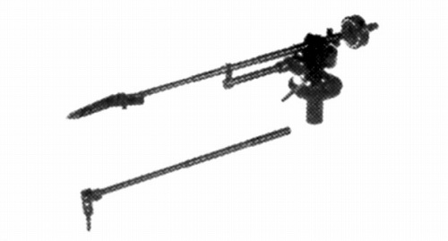
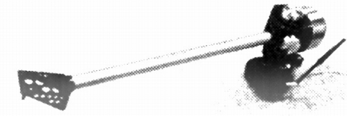
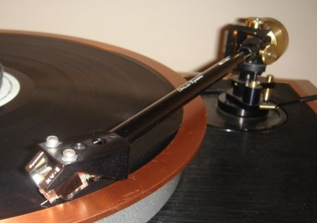
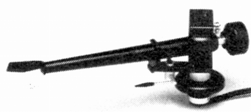

その他のアーム(その他の国)
詳細がほとんど不明のメーカーや掲載対象機種が少ないブランドがある。機種数の少ないもの、ブランドの詳細が不明なものはここで扱う。このページではトーンアーム関連のみ出したブランドを扱う。
MECHANO ELECTRONIC (メカノエレクトロニック)(日本)
1979年に登場したパイプ交換式のアームのブランド。オルトフォンのコンコルド用のパイプを付属させていた。現在、同名の企業が当時の所在地付近で高密度実装回路（SMD）のＩＣテストクリップ・タッチチェック用の関連機器を開発・製造・販売している。
A-One

■価格 39,800円
■型式 パイプ交換式スタテックバンランス型（オイルダンプ付）
■全長 310�o
■実行長 237�o
■オーバー・ハング 15�o
■トラッキングエラー 0.18/cm
■針圧範囲 0〜2g(1回転）
■アーム高さ
■アームベース穴
■アンチスケートディバイス あり
■アームリフター あり
■ラテラルバランサー
■カートリッジ自重 3〜10g(標準パイプ使用時）
■線間容量 60pF（付属のコード）
■発売 1979年5月
■販売終了 年頃
■備考 価格は1979年頃のもの
スライディングベース、オルトフォン・コンコルド用パイプ、
金メッキ出力端子及び低容量出力コード1.2m付属
BREUER DYNAMIC(ブロイアー・ダイナミック)(Swizerland)
1989年に登場したスイスのアームのブランド。個人（ミスター・ブロイアー氏？）による手造りアームだったようだ。
Model Type8


■価格 540,000円
■型式 ダイナミックバンランス型
■全長 287�o
■実行長 248�o
■オーバー・ハング 17�o
■トラッキングエラー
■針圧範囲
■アーム高さ調整 20�o
■アームベース穴 15�o
■アンチスケートディバイス あり
■アームリフター あり
■ラテラルバランサー
■カートリッジ自重
■線間容量
■発売 1988年10月
■販売終了 1993〜95年頃
■備考 価格は1988年頃のもの
垂直トラッキングアングル微調整機構あり、
別売りのダンピングアクセサリー(140,000円）あり
STABI(スタービ) (Yugosiavis=現在 Slovenia)
1980年代後半、国産のアナログディスクプレイヤーが衰退した頃、オルトフォンジャパンによりプレイヤーが紹介されたユーゴ（現スロベニア）のブランド。当時は単にSTABI(スタービ）と紹介されていたが、1982年設立のKUZUMA（クズマ）社のシリーズ名らしい。輸入が途絶えた時期もあるようだが、現在ではシーエスフィールド�鰍ﾉより製品が紹介されているようだ。
TA-1000R

■価格 220,000円
■型式 ダイナミックバンランス型
■全長 �o
■実行長 229�o
■オーバー・ハング 18�o
■トラッキングエラー
■針圧範囲
■アーム高さ調整
■アームベース穴
■アンチスケートディバイス
■アームリフター あり
■ラテラルバランサー
■カートリッジ自重
■線間容量
■発売 1989年
■販売終了 1996〜98年頃
■備考 価格は1989年頃のもの
ヘッドシェル固定型、
ヘッドシェルの傾き微調整可能。